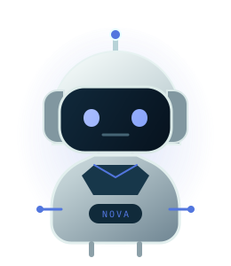

Développeur d’applications · Abidjan, Côte d’Ivoire
Des idées concrètes.
Des solutions bien pensées.
Je conçois des applications web, desktop et mobile pour répondre à des besoins réels et simplifier le quotidien. NOVA vous accompagne à travers mon parcours, mes compétences et les projets que j’ai réalisés.
Kassoum SidibéDéveloppeur d’applications

NOVAVotre guide numériqueUn parcours à explorer, des solutions à découvrir
01Visite guidée
Mon univers, en quatre étapes.
Choisissez une rubrique. NOVA vous ouvre le passage vers mon profil, mes compétences, mes projets ou mes coordonnées.
01 · À PROPOS01KSMon approcheProfil & vision
02 · COMPÉTENCES02KSCompétencesTechnologies & outils
03 · PROJETS03KSRéalisationsApplications & prototypes
04 · CONTACT04KSContactParlons d’un projet
NOVAVOTRE GUIDE · PRÊT À VOUS ACCOMPAGNERSurvolez ou sélectionnez une porte
01 Mon approche
La technologie doit résoudre de vrais problèmes.
Passionné par l’informatique et le développement logiciel, je conçois des applications destinées à répondre à des besoins concrets. À travers mes projets, je travaille sur des solutions de gestion, des outils métier et l’automatisation de processus.
Curieux, persévérant et orienté résolution de problèmes, je souhaite continuer à développer mes compétences et participer à des projets utiles et évolutifs.
Abidjan, Côte d’IvoireOuvert aux missions et collaborations
02 Boîte à outils
Les outils que j’utilise.
Des technologies choisies selon les besoins du projet. Je privilégie des solutions compréhensibles et maintenables.
Web & interface
Applications
Données & automatisation
Technologies mentionnées dans mon dossier · niveaux non affichés
03 Projets sélectionnés
Des outils qui répondent au réel.
Chaque projet répond à un besoin concret. Parcourez les applications de gestion, les outils métier et les prototypes qui composent mon univers.
APPLICATION MÉTIER · COMPTABILITÉ
Cabinet Pilote
Une application de gestion comptable conçue pour faciliter les opérations d’un cabinet. Les captures présentées proviennent de l’application réelle.
APPLICATION DE GESTION · FINANCE
Finances CMCI
Un outil financier et administratif pour le suivi des recettes, dépenses, transferts, clôtures et rapports.
APPLICATION DESKTOP · GESTION DE STOCK
MonStock
Une application de gestion de stock pour suivre les produits, les mouvements et les importations Excel. L’illustration est une proposition visuelle, pas une capture de l’application.
APPLICATION DE GESTION
Mutuelle Manager
Un projet d’application pour organiser et simplifier la gestion d’une mutuelle. Technologies à confirmer.
PROTOTYPE MOBILE · SANTÉ
MyPharma
Un concept de recherche de médicaments et de pharmacies proches, à partir d’une ordonnance et d’une localisation.
Les statuts et visuels sont indiqués selon les informations du dossier fourni. Les aperçus de MonStock, Mutuelle Manager et MyPharma sont conceptuels.
04 Entrons en contact
Vous avez un projet en tête ?
Parlons de vos besoins et de la manière dont je peux vous aider à les concrétiser.
Écrire un e-mail ↗